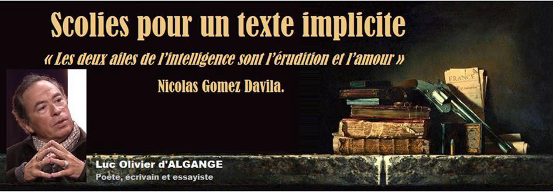
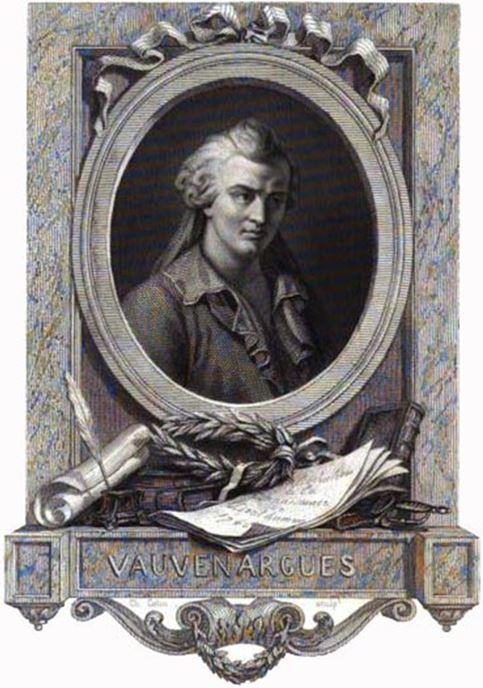

Scolies pour un texte implicite « Les deux ailes de l’intelligence sont l’érudition et l’amour » Nicolas Gomez Davila
par Luc Olivier d’ALGANGE

Nicolas Gomez Davila est de ces rares auteurs qui tiennent leur lecteur en assez haute estime pour ne lui offrir que le meilleur d’eux-mêmes. Le véritable titre de ces formes brèves, qui ne sont ni des aphorismes, ni des sentences, rassemblées sous le titre Les Horreurs de la Démocratie (choix d’éditeur non dépourvu de roborative provocation) est « Escolios a un texto implicito », Scolies pour un texte implicite. Ces « scolies » ont pour règle de ne laisser apercevoir de la pensée que la fine pointe et pour vertu, la générosité de supposer au lecteur l’intelligence et l’art de déployer, à partir de ces fines pointes, un texte qui est à la fois absent et présent, implicite, c’est à dire donné, sans être pour autant révélé.
Toute œuvre digne que l’on s’y attarde ressemble à la part émergée de l’Iceberg : ce qu’elle dit n’est que le signe de ce qu’elle ne dit point. L’implicite est, plus généralement, le propre de la haute littérature ; ce qui la distingue de l’information, des sciences humaines et du bavardage où ce qui n’est pas dit vaut encore moins que ce qui est dit. Lorsque l’écrit s’élève au rang de parole, lorsque les pages sont comme la réverbération du Logos-Roi, le moindre scintillement témoigne du gouffre lumineux du Ciel. Ce qui est dit est comme soulevé par la puissance de ce qui n’est pas dit, comme le roulement de la vague accordée au magnétisme des marées. Or, cette puissance-là, l’éminente générosité de Nicolas Gomez Davila est de l’accorder d’emblée à son lecteur, sans se soucier d’aucune autre qualification extérieure. Ce réputé « anti-démocrate » pose en a priori théorique à son œuvre, à sa « méthode » (au sens où Valéry parle de la « méthode » de Léonard de Vinci) la possibilité pour tout homme soucieux d’une vie intérieure de le comprendre. « Les hommes sont moins égaux qu’ils ne le disent mais plus qu’ils ne le croient ». La logique est ici exactement inverse à celle du « démocrate » fondamentaliste qui affirme théoriquement l’égalité de tous non sans s’accorder le magistère de la définition de l’égalité et, par voie de conséquence, une supériorité absolue qui ne saurait se traduire, en Politique, que par la généralisation des méthodes policières. « L’Etat moderne réalisera son essence lorsque la police comme Dieu, sera témoin de tous les actes de l’homme ».
Les Scolies de Gomez Davila sont une œuvre de combat. Ce qui est en jeu n’est rien moins que la dignité et la liberté humaines, mais à la différence de tant d’autres qui mâchonnent les mots de « dignité » et de « liberté », Gomez Davila ne pactise point avec les forces qui les galvaudent et les ruinent. Ne nous attardons pas sur les roquets-folliculaires qui furent lancés aux basques de ce livre magnifique : ils n’existent que pour en illustrer la pertinence : « Le démocrate ne considère pas que les gens qui le critiquent se trompent, mais qu’ils blasphèment ». Cette figure du Moderne, que Gomez Davila nomme le « démocrate » (non, précise-t-il en tant que partisan d’un système politique mais comme défenseur d’une « perversion métaphysique ») peut, en effet, être définie ici comme fondamentaliste dans la mesure où elle ne louange le « débat », la « discussion », le « polémos » que sous l’impérative condition que ceux avec qui il est permis de débattre, discuter et polémiquer fussent déjà, de longtemps et notoirement, du même avis qu’elle ; et qu’ils le soient, par surcroît, avec le même vocabulaire, les mêmes rhétoriques, et si possible, avec les mêmes intonations, le même style ou, plus probablement, la même absence de style. Le démocrate fondamentaliste ne « raisonne » ainsi que dans les limites de sa folie procustéenne ; son amour de l’humanité « en général » ne s’accomplit qu’au mépris du particulier ; la liberté d’expression ne lui vaut que strictement réservée à ceux qui n’ont rien à dire ; la « dignité » humaine ne mérite à ses yeux d’être défendue qu’en faveur de ceux qui s’en moquent et s’avilissent à plaisir.
« Aux yeux d’un démocrate, qui ne s’avilit pas est suspect. » Il n’est point d’écrivain un peu libre qui ne fasse chaque jour l’expérience de cette suspicion. Quand bien même se tiendrait-il à l’écart des idées qui fâchent, une simple tournure, un mot pris dans une acception un peu ancienne, une vague nostalgie, ou le refus de considérer le monde contemporain comme le parangon de toutes les vertus et la source de tous les bienfaits suffisent à le désigner comme suspect. La critique littéraire qui devrait se situer entre la métaphysique et l’hédonisme, entre la sagesse et le plaisir, le vrai et le beau, se réduit tristement à des rodomontades moralisatrices ou de fastidieuses rhétoriques de procureur ou d’avocat, comme si l’on ne pouvait plus lire un roman ou un essai sans en instruire le procès, comme si tout sentiment de gratitude s’était évanoui des cœurs humains pour ne plus laisser place qu’à des maniaqueries de « Fouquier-Tinville » sans envergure ni courage. « Les individus, dans la société moderne, sont chaque jour plus semblables les uns aux autres et chaque jour plus étrangers les uns aux autres. Des monades identiques qui s’affrontent dans un individualisme féroce. »
Le critique moderne est un homme qui, pour exercer son office, ne doit connaître ni remord, ni merci, mais s’enticher éperdument de la scie procédurière à quoi se réduit désormais toute forme d’Eris. Transposée dans la mesquinerie, l’agressivité moderne prend le visage patelin de la bien-pensance, c’est-à-dire de la « pensance » collective, grégaire, aussi revêche, obtuse et obscurantiste dans le « village planétaire » qu’elle le fut dans les « villages » imaginés par des bourgeois libéraux, peuplés, comme de bien entendu, d’une paysannerie torve et cruelle et d’affreux chouans ennemis de la liberté. Le Moderne lorsqu’il décrie son ennemi se décrit lui-même. Cet « archaïque », ce « superstitieux », cet « adversaire de la raison », c’est lui-même. Plus il se nomme « démocrate », et plus il méprise ce « peuple » auquel il n’accorde d’autre pouvoir que celui de l’état de fait, qu’il nomme « volonté générale », par pure tartufferie. « La volonté générale, c’est la fiction qui permet au démocrate de prétendre que pour s’incliner devant une majorité, il y a d’autres raisons que la pure et simple couardise. »
La composition pointilliste des Scolies, qui mêlent les aperçus éthiques, esthétiques et politiques, interdit que l’on traitât de chaque domaine comme d’une région séparée. Le bien, le beau et le vrai sont indissociables. L’esthète est toujours moraliste et politique. « Le monde moderne est un soulèvement contre Platon ». Il appartient donc au « réactionnaire » tel que le définit Gomez Davila (dont la vocation est d’être « l’asile de toutes les idées frappées d’ostracisme par l’ignominie moderne ») d’œuvrer à la recouvrance du platonisme, non en tant que système philosophique ( à supposer qu’il existât un « système » platonicien hors des aides-mémoires de quelques pédagogues trop pressés d’enseigner ce qu’ils ne savent pas pour lire des Dialogues) mais en tant qu’expérience métaphysique fondamentale de la lecture (lecture du monde non moins que lecture des livres). « Derrière chaque vocable se lève le même vocable avec une majuscule : derrière l’amour, l’Amour, derrière la rencontre la Rencontre. L’univers s’évade de sa prison lorsque dans l’instance individuelle, nous percevons l’essence. »
Le Politique, pour Gomez Davila, n’est pas la fin de la pensée, ni même son commencement. Elle se tient dans une zone médiane, plus où moins fréquentable selon les époques, entre le métaphysique et le perceptible, entre la théorie et le goût. « Tout est banal si l’homme n’est pas engagé dans une aventure métaphysique. » Cette banalité toutefois n’est point banale, au sens où elle serait négligeable : elle est horrible. Elle nous livre à la servitude et à la laideur, pire à une servitude et une laideur toujours identiques à elles-mêmes, comme dans une catastrophe ou un cauchemar, sous couvert de « changement » et de « nouveauté ». « Le monde moderne est arrivé à institutionnaliser avec une telle astuce le changement, la révolution, l’anticonformisme que toute entreprise de libération est une routine inscrite dans le règlement de la prison. ».
Ce « changement », c’est-à-dire cette haine de la Tradition, qui est le propre du Moderne, ce culte de l’amnésie, cet oubli de l’oubli est tel qu’il en oublie sa propre identité avec lui-même. L’oubli de l’oubli est ce pur néant immobile qui se rêve comme un changement perpétuel, autrement dit comme un présent sans présence. Ainsi, « les démocrates décrivent un passé qui n’a jamais existé et prédisent un avenir qui ne se réalise jamais. »
La politique se détruisant elle-même dans la lâcheté, le Logos se profanant en propagande et publicité, l’alchimie à rebours transformant l’or du pur amour en plomb de « convivialité » obligatoire, nous tombons sous le joug de cette caste qui prétend n’en point être une et dont l’amour de l’humanité en général est le prétexte pour n’avoir personne à aimer en particulier, dont la « tolérance » abstraite est la ruse pour n’avoir jamais à pardonner une offense, et « l’ouverture aux autres » la condition première à se dispenser de toute magnanimité. L’idéologie « citoyenne » fait office d’indulgences, sans que les Pauvres n’en profitent le moins du monde.
Si pour Gomez Davila la politique est impossible, c’est une raison supplémentaire pour s’y intéresser, mais seul. « La lutte contre le monde moderne doit être conduite dans la solitude. Lorsqu’on est deux, il y a déjà trahison ». On songe ici à la phrase de Montherlant : « Dès que les hommes se rassemblent, ils travaillent pour quelque erreur. » Il n’en demeure pas moins qu’il y eut des temps où l’ordre politique semblait destiné à nous éviter le pire, autant que possible. Le pire, c’est à-dire, le nihilisme, le totalitarisme, la terreur. « La démocratie a la terreur pour moyen et le totalitarisme pour fin ». Toutefois, le « totalitarisme » et la « terreur » ne disent point l’entièreté du pire. Le démocrate ne cesse d’en parler, de s’en prétendre le rempart lorsqu’il s’en trouve être la condition, la prémisse. Le pire est ce que l’homme devient, ce que tous les hommes deviennent, lorsque la contemplation disparaît du monde, lorsque le commerce entre les hommes ne s’ordonne plus qu’à l’économie. « L’absence de vie contemplative fait de la vie active d’une société un grouillement de rats pestilentiels ». Ce par quoi le langage témoigne de la contemplation, et de cette joie profonde, ambrée et lumineuse du Logos-Roi, c’est peu dire que le Moderne ne veut plus en entendre parler. Son monde, il le veut sans faille, compact et massif, c’est-à-dire réduit à lui-même, à sa pure immanence, autrement dit à l’opinion que les plus sots et les plus irréfléchis se font de lui. « Le moderne se refuse à entendre le réactionnaire, non que ses objections lui paraissent irrecevables, mais parce qu’elles ne lui sont pas intelligibles ».
A mesure que s’étend cet espace de l’inintelligible, s’étend le malheur. La sagesse et la joie, la ferveur et la subtilité, les nuances et les gradations, reléguées aux marges de plus en plus lointaines, ou dans un secret de plus en plus profond, ne font plus signe qu’aux rares heureux dévoués à une règle d’art ou de religion. « Celui qui se respecte ne peut vivre aujourd’hui que dans les interstices de la société ». Mieux qu’une pensée « réactionnaire » au sens restreint du terme ( dont on doit cependant oser, de temps à autre, se faire un étendard, mais le bon), les Scolies de Gomez Davila rétablissent les droits immémoriaux d’une grande pensée libertaire et aristocratique, alliant, dans l’exigence de son style « la dureté de la pierre et le frémissement de la feuille ». Que dit cette dureté, qui n’est point dureté du cœur ? Elle nous dit que pour être, il nous faut résister à l’informe, aimer l’éclat, la justesse lapidaire, et peut-être encore la pierre qui triomphe de ce Goliath qu’est le monde moderne.
Gomez Davila, cependant, n’envisage point une victoire temporelle. « Le réactionnaire n’argumente pas contre le monde moderne dans l’espoir de le vaincre, mais pour que les droits de l’âme ne se prescrivent jamais. ». Comme le texte, la victoire est implicite, secrète. Car si les droits de l’âme demeurent imprescriptibles, le Moderne est bel et bien vaincu et ses triomphes ne sont que nuées. A l’imprescriptibilité des droits de l’âme, le Moderne voulut opposer les « droits de l’homme », autre marché de dupe, car le droit de quelque chose de général et d’abstrait fait piètre figure face à la force, ce que savait déjà Démosthène. Or, le droit de l’âme est, en chaque instant, ce qui s’éprouve. A commencer dans le ressouvenir plus vaste que nous-mêmes : « L’âme cultivée, c’est celle où le vacarme des vivants n’étouffe pas la musique des morts. ». Au contraire des « droits de l’homme », les droits de l’âme, de cette âme qui emporte et allège, n’apportent aucune solution. « Les problèmes métaphysiques ne tourmentent pas l’homme afin qu’il les résolve, mais qu’il les vive. »
Sans doute y a t-il dans cette manie moderne à vouloir trouver des « solutions », à laisser les « problèmes » derrière soi, dans des époques révolues, à se croire plus avisé de ne s’intéresser à rien, une immense lassitude à vivre. Ce Moderne qui ne cesse de louanger la « vie » et le « corps » les réduit à bien peu de chose. Que lui est-elle cette « vie » s’il ne la voit comme le miroitement d’une gradation vers l’éternité, qu’est-ce que ce « corps » dont il a une si forte conscience, sinon un corps malade, et malade d’avoir oublié que ce n’est point l’âme qui est dans le corps mais bien le corps qui est dans l’âme ? Sous prétexte que certains crurent médiocrement en Dieu, nommant « Dieu » leur propre médiocrité, le Moderne ne veut plus croire qu’en « l’homme », mais « si le seul but de l’homme est l’homme, de ce principe dérive une vaine réciprocité, comme le double reflètement de deux miroirs vides ». C’est bien en vain que les Modernes et les anti-modernes cherchent en amont, dans l’histoire de la philosophie, de dignes précurseurs au monde moderne. Laissons Spinoza, Hegel, et même Voltaire où ils sont. Le véritable précurseur du monde moderne est, bien sûr, Monsieur de La Palice. Le Moderne n’est point panthéiste, dialecticien ou ironiste, il est « lapaliciste ». Sa philosophie est des plus claires : l’homme n’est que l’homme, la vie n’est que la vie, le corps n’est que le corps. Voilà bien cette pensée moderne dans toute sa splendeur qui exige de nous que nous brûlions, comme obsolètes et néfastes, toutes les philosophies, toutes les religions, tous les arts qui durant quelques millénaires, de par le monde, firent à l’humanité l’affront abominable de lui enseigner la complexité, les nuances, les relations, les rapports et les proportions, toutes choses vaines, en effet, pour qui ne veut que détruire.
Ces Scolies à un texte implicite, se donnent à lire ainsi, non seulement comme une suite d’aperçus lucides en forme d’exercices de désabusement, dans la lignée des meilleurs d’entre nos Moralistes, tels que Vauvenargues ou Rivarol, mais aussi, comme un Art de la guerre, un traité de combat contre les « lapalicistes ». « Est démocrate, celui qui attend du monde extérieur la définition de ses objectifs ». Contre la passivité des tautologies et contre le règne de la quantité qu’elle instaure, c’est à la seule vie intérieure, à la seule âme imprescriptible du lecteur qu’il appartient, dans cette solitude essentielle qui est la véritable communion, de nuancer d’un imprévisible ensoleillement, autrement dit, d’une espérance implicite mais prête à bondir dans le monde, ces Scolies qu’un inattentif regard ordonnerait au seul pessimisme.
D’autant plus inquiétantes, roboratives et salubres, ces Scolies, que ce qu’elles ne disent pas chemine en nous à l’insu des censeurs ! « Seuls conspirent efficacement contre le monde actuel ceux qui propagent en secret l’admiration de la beauté. »
Ce qu’il en sera de cette beauté et de cette admiration, nous le savons déjà. « Il n’est jamais trop tard pour rien de vraiment important. » Gomez Davila opère ainsi à une sorte de renversement du pessimisme, celui-ci n’étant plus seulement la fine pointe de la lucidité, mais celle d’une audace reconquise sur le ressassement sans fin de la vanité de toute chose. Certes, nous sommes bien tard dans la nuit du monde, dans la trappe moderne ( « tombés dans l’histoire moderne comme dans une trappe »), mais s’il n’est jamais trop tard pour rien de vraiment important, n’est-ce point à dire que toute l’espérance du monde peut se concentrer en un point ? « Un geste, un seul geste suffit parfois à justifier l’existence du monde ». Cette pensée guerroyante et savante, polémique et érudite, est avant tout une pensée amoureuse. Le combat contre l’uniformité, l’étude savante qui distingue et honore la diversité prodigieuse sont autant de sauvegardes de l’amour. « L’amour est l’organe avec lequel nous percevons l’irremplaçable individualité des êtres ». Or cette « irremplaçable individualité » n’est autre que la beauté. « La beauté de l’objet est sa véritable substance ». Celle-ci n’appartient pas à la durée, de même que la tradition n’appartient pas à la perpétuité, mais à l’instant. « L’éternité de la vérité, comme l’éternité de l’œuvre d’art sont toutes deux filles de l’instant ». L’instant ne s’offre qu’à celui qui le saisit au vol, chasseur subtil, qui discerne dans le monde des rumeurs qui se font musique, en-deçà ou par-delà le vacarme obligatoire (le monde moderne étant bruyant comme le sont les prisons). « Les choses ne sont pas muettes, seulement elles sélectionnent leurs auditeurs. » L’utopie du « tout pour tous » renversée en réalité du « rien pour personne » en vient alors à médire des choses elles-mêmes, muettes ou parlantes. La véritable bonté n’est jamais générale de même que « Dieu n’est pas le monde comme un rocher dans un paysage tangible mais comme la nostalgie dans le paysage d’un tableau. ». La véritable bonté advient dans l’imprévisible : « Pour éveiller un sourire sur un visage douloureux, je me sens capable de toutes les bassesses ».
De même que les Scolies sont les cimes du discours, leur « par-delà » salvateur, la véritable magnanimité est l’au-delà de la morale générale, le surgissement de la connaissance de l’Un dans l’instant lui-même, la fulgurance pure où la liberté absolue rejoint la soumission au Règne de Dieu. « Celui qui parle des régions extrêmes de l’âme doit vite avoir recours à un vocabulaire théologique ». Théologique, la pensée de Gomez Davila n’en garde pas moins ses distances avec ce que Gustave Thibon nommait le « narcissisme religieux », cette inclination fatale à voir l’Eglise d’abord comme une communauté humaine, avec ses administrations, sa sociologie, et son opportunisme. « L’obéissance du catholique s’est muée en une docilité infinie à tous les vents du monde ». Peu importe au demeurant : « Un seul concile n’est rien de plus qu’une seule voix dans le véritable concile oecuménique de l’Eglise, lequel est son histoire totale ». Or, pour Gomez Davila cette histoire totale inclut les dieux antérieurs. L’Iliade et Pythagore lui sont plus proches que cette Eglise « qui serre dans ses bras la démocratie non parce qu’elle lui pardonne mais pour que la démocratie lui pardonne ».
Le sacré doit « jaillir comme une source dans la forêt et non pas comme une fontaine publique sur une place ». Face au monde moderne « cette effrayante accoutumance au mal et à laideur », le discord entre paganisme et christianisme apparaît secondaire et artificieux. « Le christianisme est une insolence que nous ne devons pas déguiser en amabilité ». Cette insolence, il ne sera pas interdit de la retourner contre les « représentants » du christianisme lui-même : « N’ayant pas obtenu que les hommes pratiquent ce qu’elle enseigne, l’Eglise actuelle a décidé d’enseigner ce qu’ils pratiquent. » Le monde grec apparaît alors comme « l’autre ancien Testament » auquel il n’est pas malvenu de recourir car « entre le monde divin et le monde profane, il y a le monde sacré ». Tout, alors, est bien une question de timbre et d’intonation. La justesse du scintillement d’écume est dans le mouvement antérieur de la vague. « La culture de l’écrivain ne doit pas se répandre dans sa prose mais ennoblir le timbre de sa phrase ». Ainsi faut-il également entendre le monde, comme l’œuvre d’un écrivain « qui nous invite à comprendre son langage, et non à le traduire dans le langage de nos équivalences ». Cette leçon d’humilité et d’orgueil, humilité face au monde et orgueil apparent face à l’arrogance moderne, nous invite à la seule aventure essentielle qui est d’être au monde, comme l’écriture même du monde, nous mêmes Scolies du texte implicite du monde qu’il nous appartient de déchiffrer.
Le monde, disent les Théologiens médiévaux, est « la grammaire de Dieu ». C’est ainsi que nous perdons ou gagnons en même temps Dieu et le monde, de même que nous perdons en même temps (ou gagnons) la compréhension d’Homère et des Evangiles. « Lorsque le bon goût et l’intelligence vont de pair, la prose ne semble pas écrite par l’auteur, mais par elle-même. » Que nous dit le texte implicite sinon notre propre secret qui est le secret du monde ? Tout se joue alors dans la voix, la voix unique, irremplaçable, celle de l’amour divin ( « Nous ne sommes irremplaçables que pour Dieu ») ; la plus irrécusable preuve de l’Un étant que toute chose, tant que demeurent les droits imprescriptibles de l’âme, est unique. Point de feuille dont les nervures fussent exactement semblables à sa voisine. Le grand mythe moderne, au sens de mensonge, tient dans cette lâcheté, cette paresse face à l’interprétation qui sans fin hiérarchise les êtres et les choses du plus épais jusqu’au plus subtil. Le Moderne veut croire à tout prix que le monde est inintelligible pour pouvoir le saccager à sa guise. Le bonheur et le malheur est qu’il en est rien. Tout est écrit, et nous ne faisons qu’ajouter la ponctuation. « Mes phrases concises sont les touches d’une composition pointilliste ». L’implicite ne serait alors que le non-encore ponctué. « Si l’univers est d’une lecture malaisée, ce n’est pas qu’il soit un texte hermétique, mais parce que c’est un texte sans ponctuation. Sans l’intonation adéquate, montante ou descendante, sa syntaxe ontologique est inintelligible. »
Il n’est point de question de sens qui ne soit une question de style, d’intonation. Or, les questions de sens sont sans solution, alors que les questions de style se prouvent à chaque instant. « Cohérence et évidence s’excluent ». Toute justesse ne saurait apparaître que sous les atours du paradoxe ou du scandale. Lorsque la pensée est justement ponctuée, elle heurte de front cette inclination unanimiste du démocrate pour qui seuls l’informe et l’indistinct sont aimables. « Maint philosophe croit penser parce qu’il ne sait pas écrire ». La quête de la juste ponctuation, de l’intonation adéquate dépasse non seulement l’opinion commune, et même l’opinion minoritaire, elle dépasse du même élan les idées, les théories, les systèmes. « Le malheur de celui qui n’est pas intelligent, c’est qu’il n’y a pas d’idées intelligentes. Des idées qu’il suffirait d’adopter pour se mettre à la hauteur de l’homme intelligent ». Le dessein de Gomez Davila n’est pas de faire partager ses idées, de les mettre en circulation, comme une monnaie frappée à son effigie, mais de rendre possible une méditation sur la « cohérence » qui échappe à l’évidence, sur « l’implicite » que ses Scolies désignent et dissimulent. « Si l’on veut que l’idée la plus subtile devienne stupide, il n’est pas nécessaire qu’un imbécile l’expose, il suffit qu’il l’écoute. » Le silence autour du livre de Gomez Davila serait donc d’excellent aloi s’il ne préjugeait toutefois à l’excès de l’écoute des imbéciles et de la surdité des intelligents.
« Je ne suis pas un intellectuel moderne contestataire mais un paysan médiéval indigné ». Si le mot rebelle voulait encore dire quelque chose, l’exégète des Scolies pourrait en faire usage ; tel n’est pas le cas. Demeure à travers ce qui est dit la possibilité offerte de n’être pas soumis au temps, d’imaginer ou de se souvenir d’une cohérence du monde, mystérieuse et sensible à « l’intonation montante ou descendante ». L’implicite des Scolies est une mise-en-demeure à la recouvrance de l’histoire sacrée, c’est-à-dire d’une histoire qui ne se réduit pas à « l’incertitude de l’anecdote » ni à la « futilité des chiffres ». En ce sens, « les ennemis du mythe ne sont pas les amis de la réalité mais de la banalité », le mythe n’étant pas alors le mensonge, mais bien la réverbération du vrai, la beauté suspendue entre l’immanence ingénue de notre race et la transcendance universelle. Tout écrivain digne de ce nom récite une mythologie d’autant plus réelle, au sens platonicien, c’est-à-dire d’autant plus vraie, qu’elle lui est plus personnelle, se proposant à lui presque par inadvertance, comme une fatalité heureuse. « Les penseurs contemporains sont aussi différents les uns des autres que les hôtels internationaux dont la structure uniforme se pare superficiellement de motifs indigènes. Alors qu’en vérité seul est intéressant le particularisme qui s’exprime dans un langage cosmopolite. »
La meilleure façon de favoriser la haine fanatique des hommes entre eux est de favoriser leur ressemblance, de les confronter en autrui à l’image détestée d’eux-mêmes. L’universalisme, ce péché qui, selon le mot de Gustave Thibon, consiste « à vouloir faire l’Un trop vite » devient alors, faute d’adversaire loyal, le principe d’une catastrophe immense, de même que « la libération totale est le processus qui construit la prison parfaite ».
Entre le principe universel du christianisme et l’héritage culturel, où bruissent encore les feuillages orphiques, les armes de l’Iliade et les écumes de l’Odyssée, les pensives sagesses pythagoriciennes ou la souveraineté intérieure de Marc-Aurèle, la liberté de Gomez Davila sera de ne pas choisir. « La structure des relations entre christianisme et culture doit être paradoxale. Tension dynamique des contraires. Non pas fusion où ils se dissolvent mutuellement, ni capitulation d’aucun des deux. » On aura compris que ce « réactionnaire », dont les « saints patrons » sont Montaigne et Burckhardt, cet adversaire déclaré de la démocratie, en tant que « perversion métaphysique » est, par cela même, le contraire d’un fanatique. « Ne flattent le Peuple que ceux qui mijotent de lui vendre ou de lui voler quelque chose. » Face à la démagogie (« Démagogie est le mot qu’emploie les démocrates quand la démocratie leur fait peur »), il n’y a guère que l’aristocratie, celle-ci toutefois, étant définie, non en termes sociologiques, mais rigoureusement métaphysiques comme une possibilité universelle : « Le véritable aristocrate est celui qui a une vie intérieure. Quels que soient son origine, son rang ou sa fortune. L’aristocrate par excellence n’est pas le seigneur féodal dans son château, c’est le moine contemplatif dans se cellule. » Et ceci encore : « Au milieu de l’oppressante et ténébreuse bâtisse du monde, le cloître est le seul espace ouvert à l’air et au soleil ». Les Scolies apparaîtrons ainsi, à qui voudra bien en répondre, comme les signes de la présence de ces cloîtres détruits, de ces temples saccagés, mais dont les cryptes demeurent, textes implicites, de nos vie intérieures imprescriptibles.
L-O.d’A.
Nicolas Gomez Davila, Les Horreurs de la démocratie, éditions du Rocher, collection Anatolia
Partager cette page